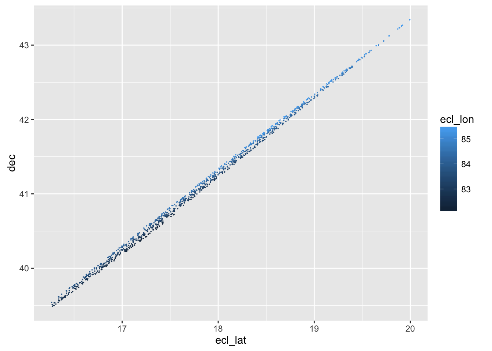

§ 18 Activity: Mapping the stars
knitr::include_graphics("images/gaia-star-map.png")Figure 18.1: Stars plotted on the celestial sphere by the Gaia space telescope. (Sept. 2016)
The image above is a map of the stars constructed by the European Space Agency’s Gaia space telescope. It reportedly shows 1,000,000,000 stars.1
- Although the map represents one billion stars, the image itself is only 660 by 398 pixels: a total of 262,680 pixels altogether. How can a billion stars be displayed in only one-quarter of a million pixels?
- Why is the image oval?
- Why are there broad, curving bands of shading? How might these reflect layers of the graphic that display different quantities? (See the codebook for some ideas about variables that might reflect the available data rather than the stars themselves.)
Gaia data are available in CSV form at this site. A codebook is here
Download one of the CSV files and see what you can make of it. For instance, …
Stars_042 <- readr::read_csv("Data/GaiaSource_000-000-042.csv.gz") ## Parsed with column specification:
## cols(
## .default = col_double(),
## random_index = col_integer(),
## astrometric_n_obs_al = col_integer(),
## astrometric_n_obs_ac = col_integer(),
## astrometric_n_good_obs_al = col_integer(),
## astrometric_n_good_obs_ac = col_integer(),
## astrometric_n_bad_obs_al = col_integer(),
## astrometric_n_bad_obs_ac = col_integer(),
## astrometric_delta_q = col_character(),
## astrometric_primary_flag = col_character(),
## astrometric_priors_used = col_integer(),
## matched_observations = col_integer(),
## duplicated_source = col_character(),
## phot_g_n_obs = col_integer(),
## phot_variable_flag = col_character()
## )## See spec(...) for full column specifications.- You can see the
.csvin the name. What does the.gzmean at the end of the file name? - How many stars are there in this one file? From the number of such
.csv.gzfiles available, estimate how many stars there are in the complete catalog. - Make a map of the stars in your one file. (Suggestion: in developing your plot, just use several thousand stars from the file. Otherwise things will be slow. Select the stars at random.)
- Use
phot_g_mean_fluxas the intensity andecl_lonandecl_latas the position variables. - Explore a bit and decide what are good aesthetics for representing the intensity. (Hints: color? size?)
- Does faceting make sense?
- Use
A simple plot:
Stars_042 %>%
sample_n(size = 10000) %>%
ggplot(aes(x = ecl_lon, y = ecl_lat)) +
geom_point(aes(size = phot_g_mean_flux, color = phot_g_mean_flux, alpha = phot_g_mean_flux))
Stars_042 <-
Stars_042 %>%
mutate(facet = round(log10(phot_g_mean_flux)),
color = log10(phot_g_mean_flux),
size = log10(phot_g_mean_flux)/20)
Stars_042 %>%
sample_n(size = 1000) %>%
ggplot(aes(x = ecl_lon, y = ecl_lat)) +
geom_point(size = 0.5, aes(color = color, alpha = size)) +
facet_wrap( ~ facet) 7. Is there a relationship between the
7. Is there a relationship between the ra and dec variables and the ecl_lon and ecl_lat variables? Try different ways assigning the variables to aesthetics until you find one that tells the story.
Stars_042 %>%
sample_n(size = 1000) %>%
ggplot(aes(x = ecl_lat, y = dec)) +
geom_point(size = 0, aes(color = ecl_lon))
- Optional: Requires some mathematical sophistication. Make a conformal-map style presentation of the relationship between the
ra/deccoordinate system and theecl_lat/ecl_lonsystem. Suggestion: Pull out only those stars that fall within a narrow band of the edges of a square in one of the coordinate systems. Then make separate plots of those stars in the two systems, perhaps using color to encode which stars in one plot correspond to stars in the other plot.
See this story on the BBC web site.↩